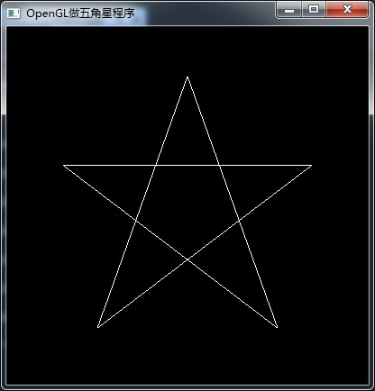
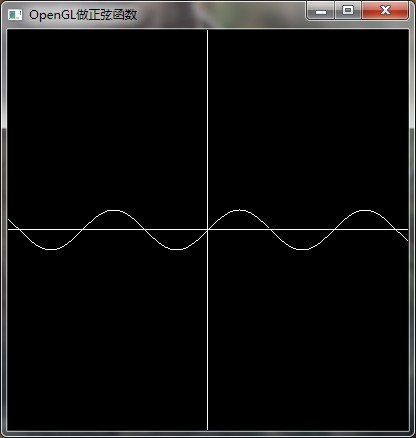

GLUT（英文全写：OpenGL Utility Toolkit）是一个处理OpenGL程式的工具库，负责处理和底层操作系统的呼叫以及I/O，并包括了以下常见的功能：
- 定义以及控制视窗
- 侦测并处理键盘及鼠标的事件
- 以一个函数呼叫绘制某些常用的立体图形，例如长方体、球、以及犹他茶壶（实心或只有骨架，如glutWireTeapot()）
- 提供了简单选单列的实现
GLUT不是OpenGL所必须的，但它会给我们的学习带来一定的方便，例如自带的glutCreatWindow 可以方便的创建一个窗口，推荐安装。
windows环境的下载地址为：http://www.opengl.org/resources/libraries/glut/glutdlls37beta.zip
GLUT 的安装有两种方法，在这里需要明白一点，安装的过程实际上是拷贝，并让编译器能连接到该库文件的过程。
将头文件、库文件和 dll 文件拷贝到 VS 系统识别目录下
- glut.h：头文件，复制到D:\Program Files (x86)\Microsoft Visual Studio 11.0\VC\include\gl目录下(需要自己来新建gl目录)
- glut.lib,glut32.lib：静态链接库，复制到D:\Program Files (x86)\Microsoft Visual Studio 11.0\VC\lib目录下
glut.dll,glut32.dll：动态链接库，复制到C:\Windows\System32目录下，64位操作系统的，还需要复制到C:\Windows\SysWOW64目录下。
在这种情况下就能通过
#include <GL/glut.h>来使用glut，下面的示例代码是在黑色背景窗口中做出一个五角星
1
2
3
4
5
6
7
8
9
10
11
12
13
14
15
16
17
18
19
20
21
22
23
24
25
26
27
28
29
30
31
32
33
34
35
36
37
38
39
40
const GLfloat Pi = 3.1415926536f;
void myDisplay(void)
{
GLfloat a = 1 / (2-2*cos(72*Pi/180));
GLfloat bx = a * cos(18 * Pi/180);
GLfloat by = a * sin(18 * Pi/180);
GLfloat cy = -a * cos(18 * Pi/180);
GLfloat
PointA[2] = { 0, a },
PointB[2] = { bx, by },
PointC[2] = { 0.5, cy },
PointD[2] = { -0.5, cy },
PointE[2] = { -bx, by };
glClear(GL_COLOR_BUFFER_BIT);
// 按照A->C->E->B->D->A的顺序，可以一笔将五角星画出
glBegin(GL_LINE_LOOP);
glVertex2fv(PointA);
glVertex2fv(PointC);
glVertex2fv(PointE);
glVertex2fv(PointB);
glVertex2fv(PointD);
glEnd();
glFlush();
}
int main(int argc, char *argv[])
{
glutInit(&argc, argv);
glutInitDisplayMode(GLUT_RGB | GLUT_SINGLE);
glutInitWindowPosition(100, 100);
glutInitWindowSize(400, 400);
glutCreateWindow("OpenGL做五角星程序");
glutDisplayFunc(&myDisplay);
glutMainLoop();
return 0;
}
直接在在工程根目录使用 glut 方法
工程根目录下创建目录 GL 加入如下文件
glut.h glut.lib glut32.lib glut.dll glut32.dll- 向工程根目录中添加上述文件
在debuge目录中加入
glut32.dll在这种情况下就能通过
#include “GL/glut.h”来使用glut，下面的示例代码是在黑色背景窗口中做出正选函数图。 将上一个例程中include部分和myDisplay函数实现替换如下，主函数不变
1
2
3
4
5
6
7
8
9
10
11
12
13
14
15
16
17
18
19
20
21
22
23
24
const GLfloat Pi = 3.1415926536f;
const GLfloat factor = 0.1f;
void myDisplay2(void)
{
GLfloat x;
glClear(GL_COLOR_BUFFER_BIT);
glBegin(GL_LINES);
glVertex2f(-1.0f, 0.0f);
glVertex2f(1.0f, 0.0f); // 以上两个点可以画x轴
glVertex2f(0.0f, -1.0f);
glVertex2f(0.0f, 1.0f); // 以上两个点可以画y轴
glEnd();
glBegin(GL_LINE_STRIP);
for(x=-1.0f/factor; x<1.0f/factor; x+=0.01f)
{
glVertex2f(x*factor, sin(x)*factor);
}
glEnd();
glFlush();
}